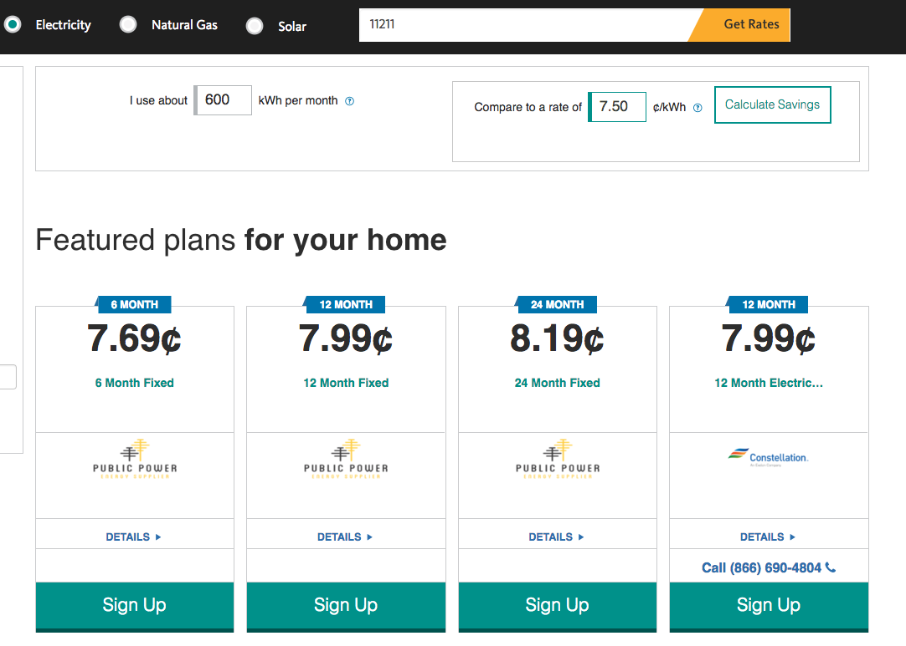
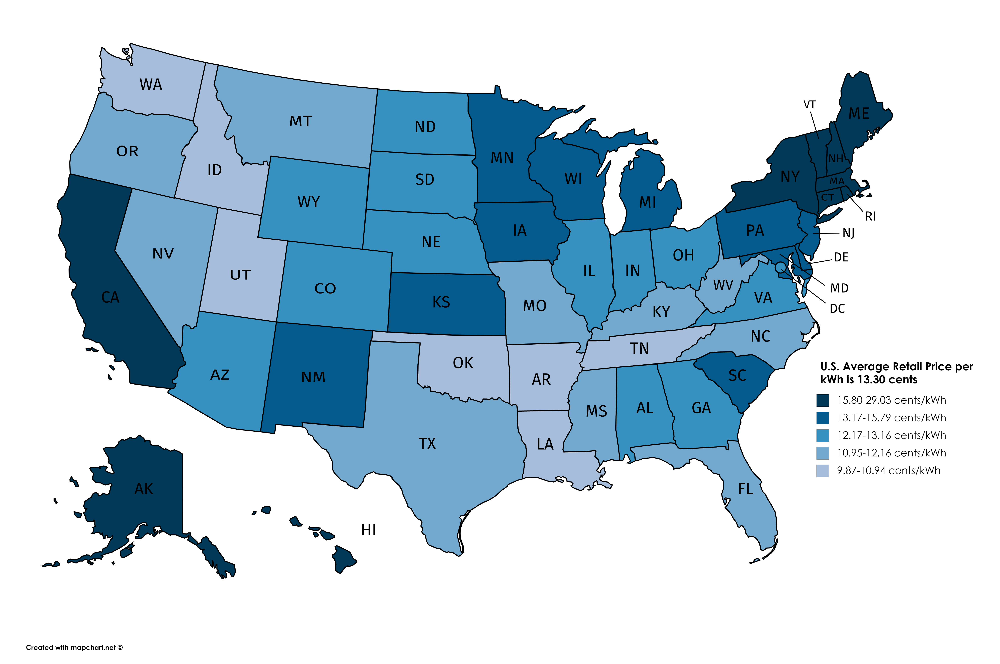
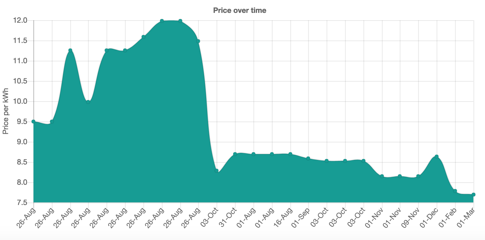

NYS is a deregulated Electricity Market

chooseenergy.com - for choosing a supplier

Energy Costs by State

Supply Energy Cost over Months

* P2P TRADING consumers can trade electricity with one another and receive payment in real-time from an automated and trustless reconciliation and settlement system.
* NEO-RETAILER Neo-retailers’ get smart demand and supply management.
* MICROGRID/EMBEDDED NETWORK OPERATOR/STRATA Electricity metering, rapid micro transactions and grid management. Trading in embedded networks breaks the nexus between generation ownership and energy consumption.

* Grid+ Agent - helps buy and sell electricity, at the cheapest rates, on your behalf.
* Allows to purchase the cheapest price of electricity in real time, automatically switching you to the cheapest available product based on current prices and your usage.
* blockchain payment technology to automate agent's payment process.